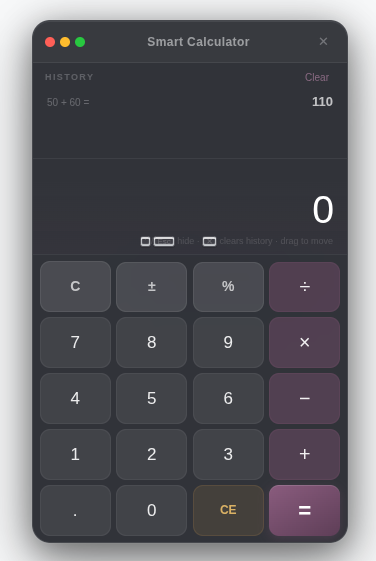
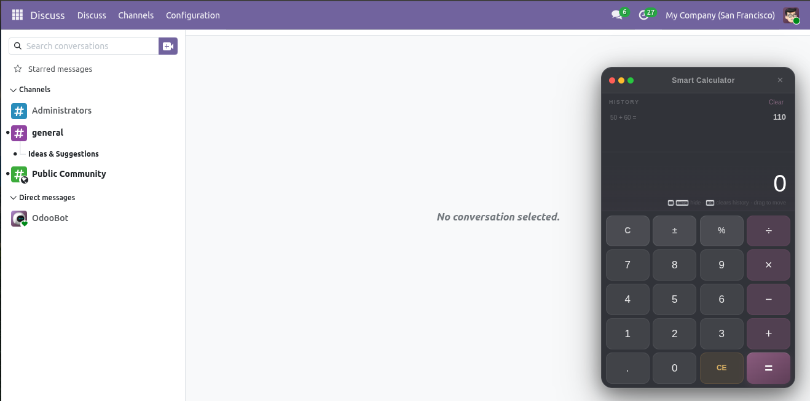

Smart Calculator brings a fast floating calculator inside the Odoo backend.
Press ` (backtick) from anywhere on backend pages to open it instantly,
calculate with keyboard or mouse, and continue your work without leaving the current screen.
Key Features
Instant launch with the ` shortcut key in backend screens.
Clean floating calculator UI with draggable panel support.
Keyboard and button input for numbers, operators, Enter, and Backspace.
History panel with quick recall of previous calculations.
Hide with Esc or `; close can clear history from the header actions.
Handles edge cases like division by zero with clear error feedback.
In action

Calculator floating above a backend view-keyboard-ready keypad and compact header.

History tape for recent expressions and results-tap a row to reuse values in your flow.
Need brackets, memory keys, or business pricing tools? Install Smart Calculator Adv or Pro from the same suite-they extend this base module without breaking shortcuts.
Floating experience
Global backtick toggle keeps focus on the form or list underneath.
Draggable chrome matches Odoo backend density.
Esc minimizes distraction without dumping unsaved Odoo edits.
Input & history
Buttons mirror laptop keypad habits (Enter as equals, Backspace-aware).
Expression display stays readable during chained operations.
History survives hide/show cycles via container-owned state.
Technical footprint
Pure OWL components registered under main_components.
Ships through web.assets_backend-no extra views required.
LGPL-3 base ideal for mixing into customer deployments.
Workflow tip: pin users who live in spreadsheets-once muscle memory adopts `, adoption sticks faster than launching OS calculators.
Odoo edition
Targets Odoo 19 backend assets (web module).
Dependencies
web only.
Installation path
Add the addons path containing bvs_smart_calculator, update the Apps list, install Smart Calculator.